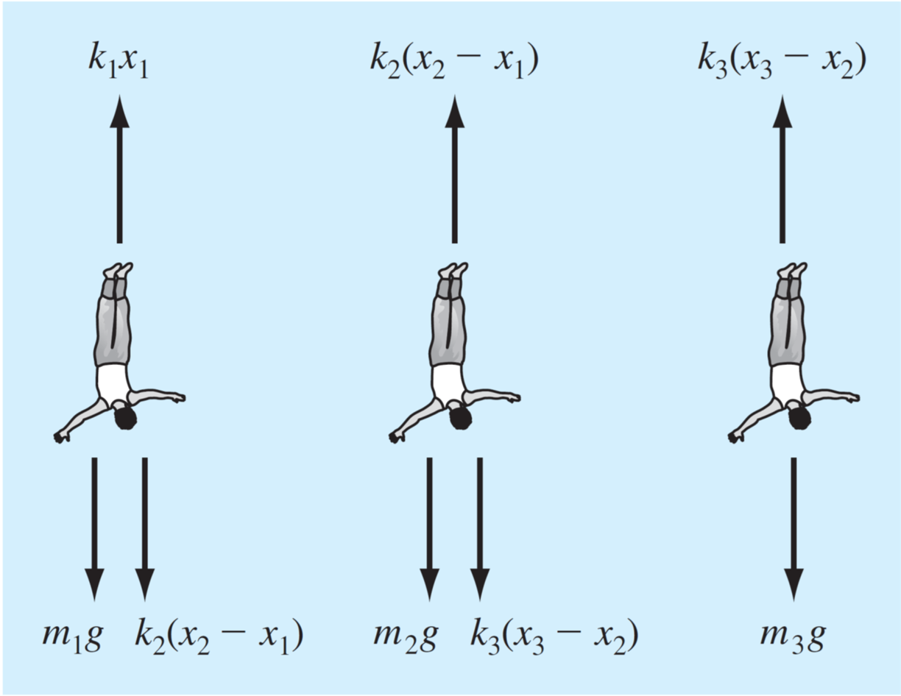
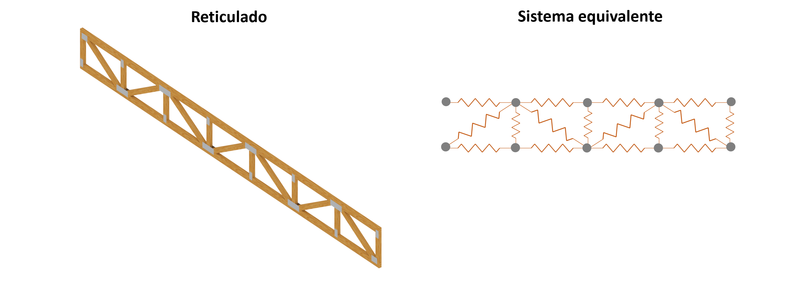
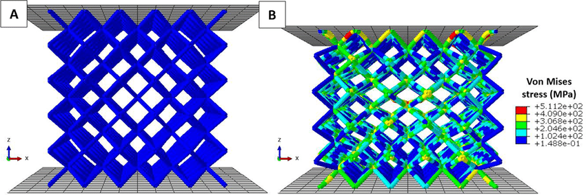
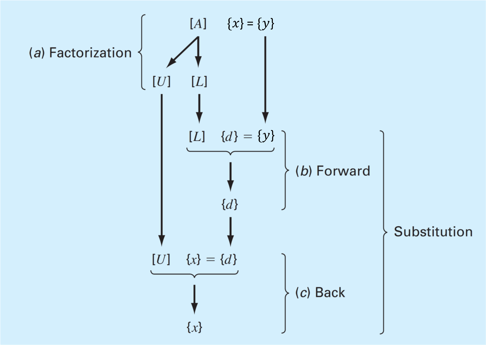

Algebra lineal y sistemas de ecuaciones lineales
Contents
MEC301 - Métodos Numéricos
2. Algebra lineal y sistemas de ecuaciones lineales#
Profesor: Francisco Ramírez Cuevas
Fecha: 8 de Agosto 2022
2.1. Introducción a los sistemas de ecuaciones lineales#
Consideremos el caso de tres personas conectada por cuerdas elásticas.

En la primera figura (a), los tres cuerpos están en la posición inicial de forma que los elásticos están totalmente extendidos, pero no estirados. Definimos el cambio en la posición inicial de cada persona, como: \(x_1\), \(x_2\), \(x_3\).
Cuando los cuerpos se dejan caer, los elásticos se extienden por la gravedad y cada cuerpo toma la posición indicada en (b).
Analizamos el cambio en la posición de cada persona utilizando la ley de Newton:
Diagrama de cuerpo libre
{kind=link}
En condiciones de equilibrio:
En el ejemplo anterior, derivamos un sistema de ecuaciones lineales con 3 incognitas el cual podemos resolver con técnicas analíticas.
Sin embargo, si el sistema es más grande, como por ejemplo un reticulado de vigas:
{kind=link}
Tenemos un sistema de ecuaciones con un gran número de incognitas y debemos recurrir a métodos más eficientes para poder resolverlos.
Este es el enfoque que utilizan los software de modelación computacional, tales como: el método de elementos finitos (FEM), métodos de los momentos (MoM), o volúmenes finitos (VEM).
{kind=link}
2.1.1. Definición general#
Decimos que una ecuación es lineal cuando:
Todas sus incognitas están únicamente separadas por sumas o restas
El exponente de cada incognita es \(1\).
Por ejemplo,
\(3x_1 + 4x_2 - 3 = -5x_3\) (lineal)
\(\frac{-3x_1 + x_2}{x_3} = 2\) (no es lineal, pero podemos la podemos transformar en una ecuación lineal: $\( -3x_1 + x_2 -2x_3 = 0 )\)$
\(x_1 x_2 + x_3 = 5\) (no lineal)
\(x_1 + 3x_2 + x_3^4 = 3\) (no lineal)
Un sistema de ecuaciones lineales esta compuesto por más de una ecuación lineal, tal como en el ejemplo de las personas conectadas por cuerdas elásticas
2.1.2. Representación matricial#
Para resolver sistemas de ecuaciones lineal se utiliza la representación matricial. Esto permite la implementación computacional de los algoritmos.
Por ejemplo, consideremos una ecuación lineal en su forma general:
donde \(a_{i,j}\) y \(y_i\) son números reales.
La forma matricial de esta ecuación tiene la siguiente forma:
O, similarmente,
donde:
De igual forma, el problema de las personas sujetas con elásticos,
se puede representar de forma matricial como:
2.1.3. Repaso de matrices#
Norma matricial. Existen distintos tipos. La más conocida es la p-norma:
\[\Vert M \Vert_{p} = \sqrt[p]{(\sum_i^m \sum_j^n |a_{ij}|^p)}\]Para \(p = 2\), se llama norma de Frobenius
Determinante. Se denota como \(det(M)\), o \(|M|\). Solo se aplica a matrices cuadradas.
Por ejemplo, para una matriz \(2\times2\), el determinante es:
\[\begin{split} |M| = \begin{vmatrix} a & b \\ c & d\\ \end{vmatrix} = ad - bc,\end{split}\]para una matrix \(3\times3\):
Matriz identidad (\(I\)). es una matriz cuadarada con \(1\) en la diagonal, y \(0\) en el resto de los elementos:
Matriz inversa. Definimos la matriz inversa de \(M\) como: \(M^{-1}\).
Solo existe para matrices cuadradas.
El producto de la matriz inversa por su diagonal es igual a la matriz identidad \(M\cdot M^{-1} = I\)
Para una matriz \(2\times2\), la matriz inversa está definida por:
\[\begin{split} M^{-1} = \begin{bmatrix} a & b \\ c & d\\ \end{bmatrix}^{-1} = \frac{1}{|M|}\begin{bmatrix} d & -b \\ -c & a\\ \end{bmatrix}\end{split}\]
La solución analítica para determinar la matriz inversa se vuelve mas complicada a medida que aumentan las dimensiones de la matriz.
2.1.4. Representación en python#
Para representar sistemas de ecuciones lineales en python utilizamos variables del tipo numyp array de la libreria numpy.
Por ejemplo, para representar el sistema:
import numpy as np
A = np.array([[ 3, 1, -5],
[-2, -2, 5],
[ 8, 3, 3]])
y = np.array([[2], [5], [-3]])
print('A:\n',A)
print('\ny:\n',y)
A:
[[ 3 1 -5]
[-2 -2 5]
[ 8 3 3]]
y:
[[ 2]
[ 5]
[-3]]
La librería linalg de numpy tiene funciones predefinidas para calcular la norma, determinante y matriz inversa.
from numpy.linalg import norm, det, inv
print('norm(A) = %.4f (Frobenius por defecto)'% norm(A))
print('det(A) = %.4f' % det(A))
print('inv(A):\n',inv(A))
norm(A) = 12.2474 (Frobenius por defecto)
det(A) = -67.0000
inv(A):
[[ 0.31343284 0.26865672 0.07462687]
[-0.68656716 -0.73134328 0.07462687]
[-0.14925373 0.01492537 0.05970149]]
# comprobamos la identidad A*A^-1 = I
# usamos numpy.dot() para multiplicar matrices
A.dot(inv(A))
array([[ 1.00000000e+00, -5.20417043e-18, 3.46944695e-17],
[ 0.00000000e+00, 1.00000000e+00, 2.08166817e-17],
[ 2.22044605e-16, 9.19403442e-17, 1.00000000e+00]])
Para la matriz identidad utilizamos la función eye de la libreria numpy.
np.eye(3)
array([[1., 0., 0.],
[0., 1., 0.],
[0., 0., 1.]])
2.1.5. Caracterización de sistemas de ecuaciones lineales#
Un sistema de ecuaciones lineales tiene solución única, si y solo si el número de incognitas es igual al número de ecuaciones linealmente independientes en el sistema
Por ejemplo, el siguiente sistema de ecuaciones lineales:
No tiene solución única, ya que: \((\mathrm{ec.~}3) = 2\times(\mathrm{ec.~}1) + (\mathrm{ec.~}2)\)
Definimos el rango de la matriz \(\mathrm{rank}(A)\), como el número de filas (o columnas) linealmente independenientes.
En python, \(\mathrm{rank}(A)\) está dado por la función matrix_rank de la librería numpy.linalg
from numpy.linalg import matrix_rank
A = np.array([[ 3, 1, -5],
[-2, -2, 5],
[ 4, 0, -5]])
matrix_rank(A)
2
Consideremos la matrix aumentada \([A|y]\) como:
donde \(A\) es una matriz \(m\times n\). Es decir, \(m\) ecuaciones y \(n\) incognitas.
El sistema tiene solución única si \(\mathrm{rank}\left([A|y]\right) = \mathrm{rank}\left(A\right)\), y \(\mathrm{rank}\left(A\right) = n\)
El sistema tiene infinitas soluciones si \(\mathrm{rank}\left([A|y]\right) = \mathrm{rank}\left(A\right)\), y \(\mathrm{rank}\left(A\right) < n\)
El no tiene soluciones si \(\mathrm{rank}\left([A|y]\right) = \mathrm{rank}\left(A\right) + 1\)
En el caso del ejemplo anterior:
y = np.array([[2], [5], [4]])
Ay_aug = np.concatenate((A,y),axis = 1)
print('[A|y] =\n', Ay_aug)
print('\n')
print('rank(A|b) =', matrix_rank(Ay_aug))
print('rank(A) =', matrix_rank(A))
print('Número de incognitas, n =', A.shape[1])
[A|y] =
[[ 3 1 -5 2]
[-2 -2 5 5]
[ 4 0 -5 4]]
rank(A|b) = 3
rank(A) = 2
Número de incognitas, n = 3
El sistema no tiene soluciones
Si \(\mathrm{det}(A) = 0\), decimos que la matriz es singular y, por lo tanto, no es invertible.
Por ejemplo, la matriz:
es singular.
P = np.array([[ 1, 2,-1],
[ 2, 3, 0],
[ 1, 1, 1]])
print('det(P) = ', det(P))
det(P) = 0.0
y, por lo tanto, no es invertible:
print('inv(P) = ', inv(P))
---------------------------------------------------------------------------
LinAlgError Traceback (most recent call last)
Input In [8], in <cell line: 1>()
----> 1 print('inv(P) = ', inv(P))
File <__array_function__ internals>:180, in inv(*args, **kwargs)
File ~/s/miniconda3/lib/python3.9/site-packages/numpy/linalg/linalg.py:552, in inv(a)
550 signature = 'D->D' if isComplexType(t) else 'd->d'
551 extobj = get_linalg_error_extobj(_raise_linalgerror_singular)
--> 552 ainv = _umath_linalg.inv(a, signature=signature, extobj=extobj)
553 return wrap(ainv.astype(result_t, copy=False))
File ~/s/miniconda3/lib/python3.9/site-packages/numpy/linalg/linalg.py:89, in _raise_linalgerror_singular(err, flag)
88 def _raise_linalgerror_singular(err, flag):
---> 89 raise LinAlgError("Singular matrix")
LinAlgError: Singular matrix
Decimos que una matriz \(A\) está mal condicionada, si \(\mathrm{det}(A) \approx 0\).
Si bien las matrices mal condicionadas tienen inversa, son numericamente problemáticas, ya que pueden inducir errores de redondeo, overflow o underflow como resultado de la división por un número muy pequeño
Para determinar si una matriz está mal condicionada utilizamos el número de condición, definido como:
Matrices mal condicionadas están caracterizadas por “\(\mathrm{Cond}(A)\)” altos
En python, \(\mathrm{Cond}(A)\) está dado por la función cond de la librería numpy.linalg
from numpy.linalg import cond
print('Cond(P) = ',cond(P))
Cond(P) = 3.757434988222266e+16
\(\mathrm{det}(A)= 0\), no necesariamente significa que el sistema no tiene solución
Por ejemplo, en el ejemplo anterior
print('A\n', A)
print('\n')
print('det(A) = ', det(A))
A
[[ 3 1 -5]
[-2 -2 5]
[ 4 0 -5]]
det(A) = 0.0
Sin embargo, como habíamos determinado, el sistema tiene múltiples soluciones.
2.2. Métodos de solución directos#
2.2.1. Eliminación de Gauss#
Es un algoritmo para resolver sistemas ecuaciones lineales basado en convertir la matriz \(A\) en una matriz triangular superior. El sistema toma la forma:
Esta ecuación puede resolverse fácilmente, comenzando por \(x_4 = y_4'/a_{4,4}'\), luego continuamos con \(x_3 = \frac{y_3' - a_{3,4}x_4}{ a_{3,4}}\), y así sucesivamente hasta llegar a \(x_1\). En otras palabras, utilizamos sustitución hacia atrás, resolviendo el sistema desde abajo hacia arriba.
Si \(A\) es una matriz triangular inferior, resolveríamos el problema de arriba hacia abajo utilizando sustitución hacia adelante.
La mejor forma de entender el método de eliminación Gauseana es con un ejemplo:
Paso 1: Transformamos el sistema de ecuaciones en su forma matricial \(Ax=y\).
Paso 2: Determinar la matriz aumentada [A, y]
Paso 3: Deteriminamos la matriz triangular superior utilizando pivoteo parcial y eliminación.
Comenzando por la primera columna. Primero, permutamos las filas de manera que el coeficiente con mayor valor absoluto quede en la primera fila:
Luego, eliminamos los otros coeficientes de la primera columna, comenzando por el segundo. Multiplicamos la primera fila por \(1/2\) y la restamos a la segunda fila:
Después, multiplicamos la primera fila por \(- 1/4\) y la restamos a la tercera fila:
Repetimos el proceso con la segunda columna. Primero, permutamos las filas:
Luego, eliminamos el coeficiente inferior. Multiplicamos por la segunda fila por \(1/2\) y restamos a la tercera fila:
Paso 4. Realizamos sustitución hacia atras.
El método de eliminación Gaussiana es de complejidad \(O(N^3)\)
2.2.2. Factorización LU#
Es posible demostrar que cualquier matriz cuadrada \(A\) puede ser expresada como el producto de una matriz triangular inferor \(L\), y una matriz triangular superior \(U\).
El proceso para obtener \(L\) y \(U\) es conocido como descomposición o factorización LU. Es el método de solución de ecuaciones lineales más confiable y utilizado.
El tipo de factorización LU no es única, ya que existen múltiples formas de representar \(L\) y \(U\) para un \(A\) dado. Así, definimos tres tipos de factorizaciones comúnmente utilizadas:
Nombre |
Condiciones |
|---|---|
Doolittle |
\(L_{ii} = 1\), \(i = 1, 2,... \), \(n\) |
Crout |
\(U_{ii} = 1\), \(i = 1, 2,... \), \(n\) |
Choleski |
\(L = U^T\) |
Una vez ejecutada la factorización, resolvemos el sistema \(Ax = y\).
{kind=link}
Primero resolvemos el sistema \(Ld = y\), por sustitución hacia adelante.
Luego, resolvemos el sistema \(Ux = d\), por sustitución hacia atrás.
A diferencia del método de eliminación de Gauss, la factorizacion LU no depende del vector \(y\). Por lo tanto, es conveniente para resolver el sistema \(Ax=y\), con múltiples valores de \(y\).
Debido a que la factorización LU está basada en eliminación de Gauss, el orden de complejidad es \(O(N^3)\).
Existen diversos métodos para obtener las matrices \(L\) y \(U\). Uno de ellos es mediante eliminación Gaussiana.
Como mostramos anteriormente, el método de eliminación de Gauss permite determinar una matriz triangular superior. La matriz triangular inferior, aunque no se mostró de forma explicita esta conformada por “\(1\)” en la diagonal, y los múltiplos utilizados para eliminar los elementos de las columnas.
En general, se puede demostrar que para una matriz \(A\), se cumple la siguiente relación:
donde \(P\) es la matriz de permutaciones.
Por ejemplo, en el ejercicio anterior:
Tenemos:
A = np.array([[ 4, 3, -5],
[-2, -4, 5],
[ 8, 8, 0]])
L = np.array([[ 1, 0, 0],
[-0.25, 1, 0],
[ 0.5, 0.5, 1]])
U = np.array([[ 8, 8, 0],
[ 0, -2, 5],
[ 0, 0,-7.5]])
P = np.array([[0, 0, 1],
[0, 1, 0],
[1, 0, 0]])
print('P*A =\n',np.dot(P,A))
print('\n')
print('L*U =\n',np.dot(L,U))
P*A =
[[ 8 8 0]
[-2 -4 5]
[ 4 3 -5]]
L*U =
[[ 8. 8. 0.]
[-2. -4. 5.]
[ 4. 3. -5.]]
2.3. Métodos iterativos#
Los métodos iterativos están basados en una serie repetitiva de operaciones, comenzando por un valor inicial. A diferencia de los métodos directos, el número de operaciones está condicionado por la convergencia y el valor inicial escogido.
Las ventajas de los métodos iterativos es que tienen un orden de complejidad menor que los métodos directos, y no requieren gran capacidad de memoria (recordemos que factorización LU requiere almacenar las matrices L, U y P)
La gran desventaja radica en la convergencia de los algoritmos. Una condición suficiente, pero no necesaria es que la matriz \(A\) debe ser diagonal dominante, es decir, los elementos de la diagonal, \(a_{i,i}\), deben satisfacer:
Estos métodos se utilizan, generalmente, en simulaciones con elementos finitos (FEM), o volúmenes finitos (VEM).
2.3.1. Gauss-Seidel#
El algoritmo se puede resumir en los siguientes pasos:
Asumimos un valor inicial para \(x_2^{(0)}, x_3^{(0)}, \cdots, x_n^{(0)}\) (con excepción de \(x_1^{(0)}\)).
Calculamos un nuevo valor para \(x_1^{(1)}\) mediante:
Utilizando el nuevo valor \(x_1^{(1)}\) y el resto de \(x^{(0)}\) (con excepción de \(x_2^{(0)}\)), determinamos \(x_2^{(1)}\).
Repetimos el paso 3 hasta completar todos los elementos del vector \(x\).
Continuamos con la iteración hasta que el valor de \(x\) converge dentro de una tolerancia \(\varepsilon\), definida por:
Por ejemplo, resolvamos el siguiente sistema de ecuaciones con el métodod de Gauss-Seidel:
Primero, verificamos que la matriz es diagonal dominante:
A = [[ 8., 3., -3.],
[-2., -8., 5.],
[3., 5., 10.]]
# coeficientes de la diagonal
diagA = np.diag(np.abs(A))
print('diag(A) = ',diagA)
# suma de los elementos sin la diagonal
off_diagA = np.sum(np.abs(A), axis=1) - diagA
print('off_diag(A) =',off_diagA)
diag(A) = [ 8. 8. 10.]
off_diag(A) = [6. 7. 8.]
if np.all(diagA >= off_diagA):
print('la matriz es diagonal dominante')
else:
print('la matriz no es diagonal dominante')
la matriz es diagonal dominante
def gauss_seidel(A,y,x):
from numpy import copy
from numpy.linalg import norm
epsilon = 0.01 # tolerancia
converged = False # verificar convergencia
# guardamos el valor inicial
x_old = copy(x)
for k in range(1, 50):
for i in range(x.size):
x[i] = y[i] # xi = yi
for j in range(x.size):
if i == j: # saltamos i = j
continue
x[i] -= A[i][j]*x[j] # xi = yi - sum(aij*xj)
x[i] = x[i]/A[i][i] # xi = (yi - sum(aij*xj))/aii
# comparamos el error con la tolerancia
dx = norm(x-x_old)
print("iter =",k,'; x =',x)
if dx < epsilon:
converged = True
print('Converged!')
break
# guardamos el valor de x para la nueva iteracion
x_old = copy(x)
if not converged:
print('No converge, incrementar número de iteraciones')
return x
import numpy as np
A = [[ 8., 3., -3.],
[-2., -8., 5.],
[3., 5., 10.]]
y = np.array([14., 5., -8.])
x = np.array([0.,0.,0.]) # valores iniciales
gauss_seidel(A,y,x)
iter = 1 ; x = [ 1.75 -1.0625 -0.79375]
iter = 2 ; x = [ 1.85078125 -1.58378906 -0.56333984]
iter = 3 ; x = [ 2.13266846 -1.51025452 -0.68467328]
iter = 4 ; x = [ 2.05959296 -1.56781904 -0.63396837]
iter = 5 ; x = [ 2.100194 -1.54627873 -0.65691883]
iter = 6 ; x = [ 2.08350996 -1.55645176 -0.64682711]
iter = 7 ; x = [ 2.09110925 -1.55204425 -0.65131065]
Converged!
array([ 2.09110925, -1.55204425, -0.65131065])
2.4. Solución de sistemas de ecuaciones lineales con python#
En python la forma más facil de resolver sistemas de ecuaciones lineal es mediante la función solve de numpy.linalg. Esta función utiliza factorización LU para resolver el sistema.
Por ejemplo, tomemos el ejemplo de las personas conectadas por elásticos:
Persona |
Masa (kg) |
Constante del resorte (N/m) |
Longitud incial del elástico |
|---|---|---|---|
primera |
60 |
50 |
20 |
segunda |
70 |
100 |
20 |
tercera |
80 |
50 |
20 |
Tenemos un sistema de la forma:
import numpy as np
A = np.array([[ 150, -100, 0],
[-100, 150, -50],
[ 0, -50, 50]])
y = np.array([588.6, 686.7, 784.8])
x = np.linalg.solve(A, y)
print(x)
[41.202 55.917 71.613]
Notar que en este problema \(x_1\), \(x_2\) y \(x_3\) representan las posiciones relativas de las personas. Así la posición final está dada por:
print('Posición final de las personas: ', x + [20, 40, 60])
Posición final de las personas: [ 61.202 95.917 131.613]
Mediante la librería scipy podemos hacer factorización LU.
from scipy.linalg import lu
P, L, U = lu(A)
print('P:\n', P)
print('L:\n', L)
print('U:\n', U)
print('LU:\n',np.dot(L, U))
P:
[[1. 0. 0.]
[0. 1. 0.]
[0. 0. 1.]]
L:
[[ 1. 0. 0. ]
[-0.66666667 1. 0. ]
[ 0. -0.6 1. ]]
U:
[[ 150. -100. 0. ]
[ 0. 83.33333333 -50. ]
[ 0. 0. 20. ]]
LU:
[[ 150. -100. 0.]
[-100. 150. -50.]
[ 0. -50. 50.]]
2.5. Referencias#
Kong Q., Siauw T., Bayen A. M. Chapter 14: Linear Algebra and Systems of Linear Equations in Python Programming and Numerical Methods – A Guide for Engineers and Scientists, 1st Ed., Academic Press, 2021
Chapra S., Canale R. Parte tres: Ecuaciones algebraicas lineales en Métodos Numéricos para Ingenieros, 6ta Ed., McGraw Hill, 2011